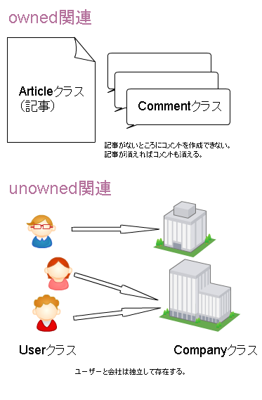
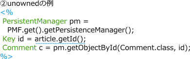

株式会社 アイプランニング
Towa Edogawabashi building 8F
Yamabuki-cho 347
Shinjuku-ku Tokyo
Phone: 03-5225-1147
Google App Engine連載記事です。Google App Engine/Javaで使えるキー・バリュー型DBのBigTableの特徴について解説します。特に分かりづらい、JDOを通して関連を設定する方法について重点的に説明します。
目次
第一回 Google App Engine/Javaの特徴・Eclipseプラグインのインストール
第二回 Google App
Engine/Javaデータストアの特徴
第三回 Google App Engine/Javaで簡易Blogを作ってみる
BigTableの概要
BigTableは、Google社内でも実際に使われている、キー・バリュー型のデータベースです。
JOIN等のリレーショナルDBでは良く使われる機能がありません。
代わりに、JDOを使ってDBにアクセスすることで、オブジェクトを扱うようにDBを操作することが出来ます。
エンティティ
GAEデータストア内のデータ
オブジェクトを「エンティティ」といいます。
テーブルを作成する必要はなく、エンティティをinsertするとDBも自動的に作成されます。
DBの初期化は、war/WEB-INF/appengine-generated/local_db.binを削除することで行います。
ownedとunowned関連
GAEではSQLでJOINを書くことが出来ません。
その代わりに、永続オブジェクト内にオブジェクトタイプのフィールドを定義し、
オブジェクト同士を関連付けることが出来ます。
関連の実装には２種類あります。
「owned（所有関係）」と「unowned（非所有関係）」です。
owned（所有関係）では、子オブジェクトは親オブジェクト無しには存在出来ません。
親を削除すると子も消えます。
unowned（非所有関係）では、親と子は独立に存在できます。
親エンティティを削除しても、子オブジェクトが消えることはありません。
この関連は、JDOの機能を利用していないので、自前のコーディングが必要になります。
たとえば、blogの記事と、記事につく読者コメントの関係がownedにあたります。
コメントオブジェクトは、記事オブジェクトと独立しては存在できません。

RDBの開発経験があれば、オブジェクトが独立して存在できるunownedのほうが馴染み深いでしょう。
次回は、サンプルアプリケーションとして簡易ブログを作成します。
ブログは、記事がコメントを所有する一対多関係になっているので、ownedを使います。
関連を用いた参照の仕方
実際のコード例は次回に回しますが、
ownedとunownedでは、コード上はどのように記述が変わってくるかを簡単に説明します。
ownedでは、親クラスのフィールドに子クラスを追加します。
そのため、親クラスから直接アクセスできます。
なお、子クラスは最初にアクセスされたときに、データストアから読み込まれます。

GAE/Jではunownedをサポートしていないため、
検索するコードを書く必要があります。
親クラスに子クラスのキーを持たせておき、
キーを介して子クラスをgetObjectById()で取得するようにします。
また、親クラスのgetterで検索に行くよう実装する方法もあります。
詳しくは、以下サイトを参照してください。
GAEでunownedな関連を定義する方法
- ひがやすを blog
開発者によっては未実装部分の多いJDOを使わず、
Slim3などのフレームワークを使って開発することも行われています。
検索に関する制約
GAEのデータストア(BigTable)はキー・バリュー型のDBですので、リレーショナルDBなどでよく使われるLike検索には対応していません。
また、全文検索なども、公式には対応していません。
検索の方法は、完全一致または「スキャン」（インデックスの前方一致検索）の二種類しかないようです。
制約に関しては以下サイトに良くまとまっています。
ここが大変だよBigtableとGoogle App Engine - ＠IT
全文検索
前方一致ではなく、全文検索がどうしても必要なシーンはあると思います。
その場合は、Java側で実装することになるでしょう。
単純な実装としては、全件取得してフィルタしてしまう方法もありますが、パフォーマンス上の問題があります。
大量の文を扱うならば、文章中単語の抽出をした後にインデックス化するのが一般的です。
全文検索の技術については、Wikipediaを参照してください。
全文検索 - Wikipedia
GAE/Jですぐ使えるライブラリを見つけることは出来ませんでした。
Compass - Java Search Engine Framework
GAE/J対応の全文検索ライブラリですが、日本語には非対応のようです。
GAE Hackathon Disc. 3 全文検索 - Ian Lewis
GAE Python対応の全文検索実装です。
残念ながら、GAE/J公式での全文検索対応はロードマップにありませんので、ライブラリの発展を待つか、自前実装をする必要があります。
参考資料
公式チュートリアル
だらだら備忘録:
GAE/JのDatastoreのはなしとか
GAEでunownedな関連を定義する方法
- ひがやすを blog
アイプランニング技術情報
技術情報TOPページ
プログラマ募集中・・・
お客さまの立場に立ってモノが作れる判断力、企画力、コンサルティング能力を磨きたくはありませんか？プログラム能力は、プロジェクトを通じて自然と能力があがるようなシステムになっています。初心者プログラマであっても３年程度で、その能力は初心者だったとは思えないくらいのスキルとなっています。
これは、「最初は誰でも初心者だ」という教育方針があるため、また、多くの社員が入社して初めてプログラミングにふれたという経験があるために自分のつまづき体験や、成功体験を含めた教育がなされているからなのです。
このようにアイプランニングでは、社員１人ひとりの個性と人間性を重視し、スキルにあったマンツーマン教育であなたを一人前のエンジニアへと成長させていきます。 それは誠実なスタッフが集まっているからこそ、どんなお客様からも信頼される企業に成長できるから。私たちはそう考えています。
プログラマを目指して会社に入ったものの、思った通りの仕事をさせてもらえなかったと思っている人、教育システムが十分でなかったためにスキルが身に付いていないと思っている人も気軽にご応募ください。パソコンのスキルに自信のない方でも、マンツーマンの研修制度で一人前に成長できるフィールドを整えておりますので安心してご応募くださいね。
知識だけでなく本当の開発力が身につく環境でのシステム開発でみつかる『やりがい』はもちろん、プライベートでも今までになかった充実感が得られますよ。